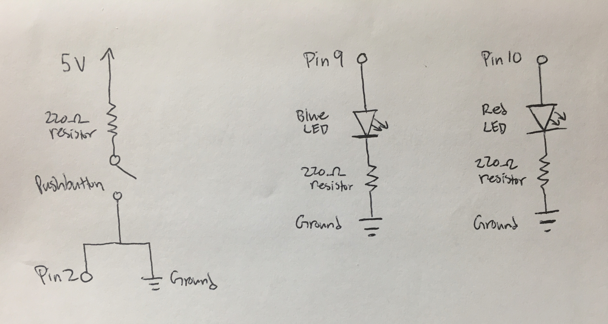

Schematic

As seen in the above schematic, the circuit contains 2 LEDs—one red, one blue—and a 5V power source.
The red LED was connected to pin 10 while the blue LED was connected to pin 9. These pins were selected
because they allowed for analog writing, as indicated by their tildes (~).
Just for easier wiring later, all resistors selected were 220 ohms. For the red LED, 5V-1.8V / 0.02A = 160 ohms
and for the blue LED, 5V-3.3V / 0.02A = 85 ohms. Two different pins were used to allow for easier controlling
of each LED so they may turn on and off independently.
Circuit (Image)

In the image, both blue and red LEDs are on, indicating that it is in the middle of running,
initiated by a press of the pushbutton. Both sides of the breadboard are used to provide
for more space to work with the button and LEDs. As a result, to complete the LEDs' circuits, a
black ground wire connects one grounding side of the breadboard to the other grounding side.
The pushbutton's circuit includes a connection to Pin 2, allowing for any changes in state to be detected.
That is, whether it is pushed, closing the loop and letting current flow through, or whether it is not pushed,
leaving a gap between the 5V power source and ground (an incomplete circuit). Meanwhile, the two LEDs follow
the same simple circuit pattern of pin --> LED --> resistor --> ground. The button was placed at one extended
of the LEDs instead of in the middle so it was easier to press among the tangle of wires and resistor/LED legs.
Firmware (Code Snippet)
// Declares the input pin for button as pin 2.
const int buttonPin = 2;
// Declares the output pin for the first led as pin 10.
// In attached images, this is the RED led.
const int ledPin = 10;
// Declares the output pin for the second led as pin 10.
// In attached images, this is the BLUE led.
const int ledPin2 = 9;
// Initiated buttonState variable to store value if button is pressed.
int buttonState = 0;
// Sets up input and output pins.
void setup() {
// Set ledPin pin as output.
pinMode(ledPin, OUTPUT);
// Set ledPin2 pin as output.
pinMode(ledPin2, OUTPUT);
// Set buttonPin pin as input.
pinMode(buttonPin, INPUT);
}
// Detect if button is pressed, and if so, call the
// flashLed method. Otherwise, 1 led (red in images) stays off,
// and one led (blue in images) stays on.
void loop() {
// Stores variable for whether button was pressed or not.
buttonState = digitalRead(buttonPin);
// Condition if button was pressed.
if (buttonState == HIGH) {
// Call flashLed method.
flashLed();
} else {
// Red led is off.
digitalWrite(ledPin, LOW);
// Blue led is on.
digitalWrite(ledPin2, HIGH);
}
}
// After a button is pressed, flashLed will call the
// lightLoop method multiple times to flash the two leds at
// different speeds, as determined by the delays.
void flashLed() {
// Call lightLoop and run intervals with a 5ms delay.
lightLoop(5);
// Call lightLoop and run intervals with a 10ms delay.
lightLoop(10);
// Call lightLoop and run intervals with a 15ms delay
lightLoop(15);
// Use a for loop to call lightLoop method 10 times.
for (int i = 10; i > 0; i--) {
// Initiate rand_del variable to randomly assign a delay
// interval between 1ms and 3ms for lightLoop method.
int rand_del = random(1, 4);
// Call the lightLoop method with the randomly determined int.
lightLoop(rand_del);
}
// At the end of the program run, ensure red led is off.
analogWrite(ledPin, 0);
// At the end of the program run, ensure blue led is on.
analogWrite(ledPin2, 255);
}
// Turns the two leds (blue and red) on once and off once with a fade.
// When one led is at its brightest, the other led is at its dimmest.
void lightLoop(int del) {
// Use a for loop to complete one full duty cycle.
for (int duty = 0; duty <= 255; duty++) {
// Turns one led (red) from lowest to highest brightness.
analogWrite(ledPin, duty);
// Turns one led (blue) from highest to lowest brightness.
analogWrite(ledPin2, 255 - duty);
// Delay in ms as determined by flashLed method.
delay(del);
}
// Use a for loop to complete one full duty cycle.
for (int duty = 255; duty >= 0; duty--) {
// Turns one led (red) from highest to lowest brightness.
analogWrite(ledPin, duty);
// Turns one led (blue) from lowest to highest brightness.
analogWrite(ledPin2, 255 - duty);
// Delay in ms as determined by flashLed method.
delay(del);
}
}
The code used included snippets and functions mentioned in the class slides. An additional
function, "random," was used and its documentation can be found here:
https://www.arduino.cc/reference/en/language/functions/random-numbers/random/. The random function
was used to determine an integer (between 1 and 3) to use as the delay in ms for adjusting the
fade speed. Instead of hardcoding the numbers in manually, I settled with generating random ints.
While I initially struggled to get the LED to continue fading after the button was pressed (initially,
I put all the button-fading into the loop itself), the solution was to create a new method (flashLed) to call
another method (lightLoop) that could then (1) generate the delay in ms and (2) control the
fading speed and actual fades of the 2 LEDs itself. To declare a delay variable upon initialization
of a method, I double-checked documentation from here: https://www.arduino.cc/en/Reference/FunctionDeclaration.
During the button push run, analogWrite is used to allow for smooth and gradual fading of the LED lights. However,
once back to the original states (off for red, on for blue), digitalWrite is used as the LEDs only
need to be on/off (or high/low).
Circuit Operation (Animated GIF)

The GIF shows the two LED lights turning on and off, but in opposites to each other, so when the red LED starts
to become brighter, the blue LED starts to become dimmer and vice versa. While it might look like the two LEDs
are "working together," in reality, the blue LED's brightness is dependent on how bright the red LED is,
but the red LED's brightness is not dependent on the blue LED. The original state of the LEDs is on for
blue and off for red. At the end of each button push run, the LEDs return to the original state.